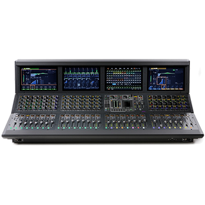

Digital
S6L-32D
The next stage in live sound
Mix and record live productions of any size with ease. Avid VENUE | S6L delivers the unmatched processing power and sound clarity artists and engineers rely on to present the best show possible. From direct AAX and Waves plugin support and 128 tracks of Pro Tools recording, to full system modularity and 300+ processing channels.